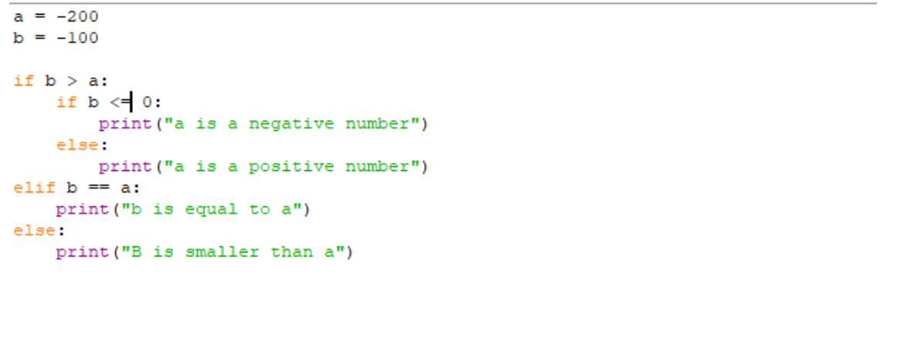

Previous
Next
If Statements
Introduction
If statements are one of the main building blocks of programming. They basically allow you to write lines or blocks of code that are only executed if a certain condition is fulfilled, and ignored if they’re not. These in combination with boolean operators can lead to many opportunities. Boolean operators are essentially mathematical operations that have only 2 possible results, true or false, 1 or 0, on or off .etc. These operators are listed below.
- Equals: a == b
- Not Equals: a != b
- Less Than: a < b
- More Than: a > b
The reserved words: and, or, and not can be used to combine multiple operators.
If Statements
The simple if statement works by using the keyword if, followed by the conditional criteria, followed by a colon :, followed by a line of code that is only executed IF the conditional criteria is fulfilled. This line of code is indented on another line. The way you can indent code using IDLE is by using the tab key. IDLE also should indent automatically if you hit enter after a colon. A demonstration of a simple if statement is presented below.
Try changing the value of b and a. If b is lower than a the program should output nothing. But what if we want the program to give us a different message if b is less than a? Well that’s where Else statements come in.
Else Statements
The else statement can be used following an If statement. It allows you to provide another section of code that's performed if the conditional criteria for the If statement is not met. This means we can provide an output for when b is smaller than a. Like in the example below.
Now what if b and a are the same value? Give it a go. See how it still says that b is smaller than a even though they are the same value. We need another conditional statement for if b and a are the same value. Now one way this could be done would be by just adding another If statement like the one below.
The problem with this is that its bad programming practice. This is because if b is more than a, the condition for the first If statement is met, meaning we don’t want to waste the programming power to execute the next if statement. Yet this program still executes the second if statement even though we know it isn’t true. So to get past this we use an Else If statement.
Else If Statements
Else If Statements allow you to write another set of conditional criteria incase the first If statement is not met. This means that we can add another if statement that will only execute if the first one fails, meaning we won't have to execute unnecessary code. Check the example below.
You can use as many elif statements that you like, for example you could add another that detects if a and b are a negative number. Feel free to give this a go. You can even start nesting if statements. This is where you put if statements inside the initial statements code block, like in the example below.

You can also try combining multiple boolean statements in one If statement. There's a lot of variation in what you can do with loops and conditional statements. As a result this is where a lot of people start getting lost with programming so do you best to stick with this and do your own research, as well as going over this lesson again if you still don’t quite grasp the concept.